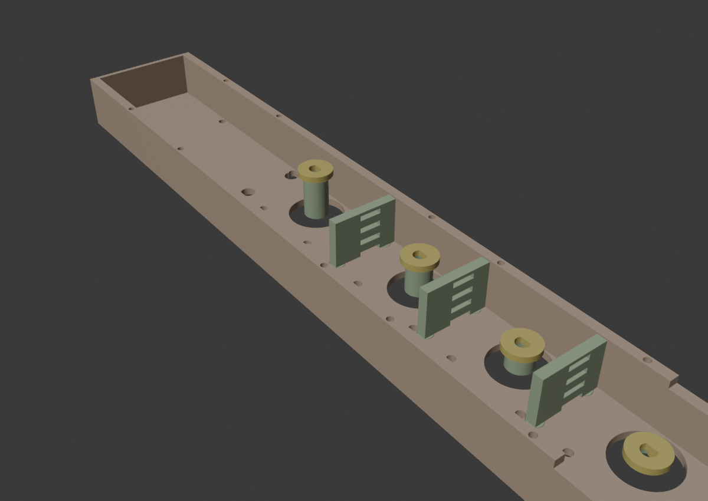
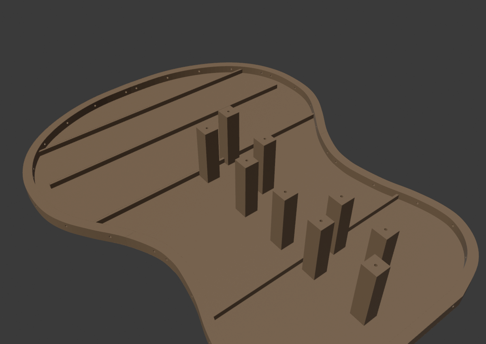
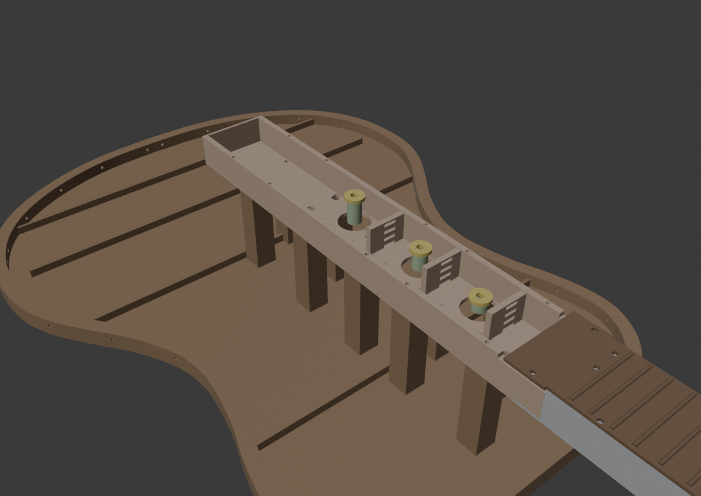
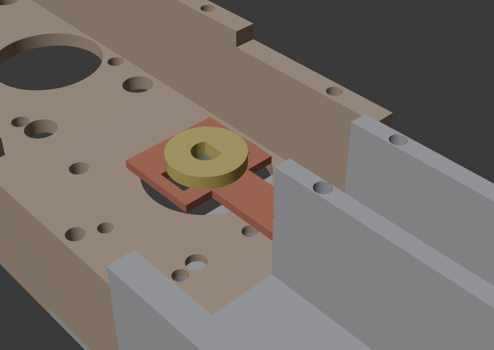
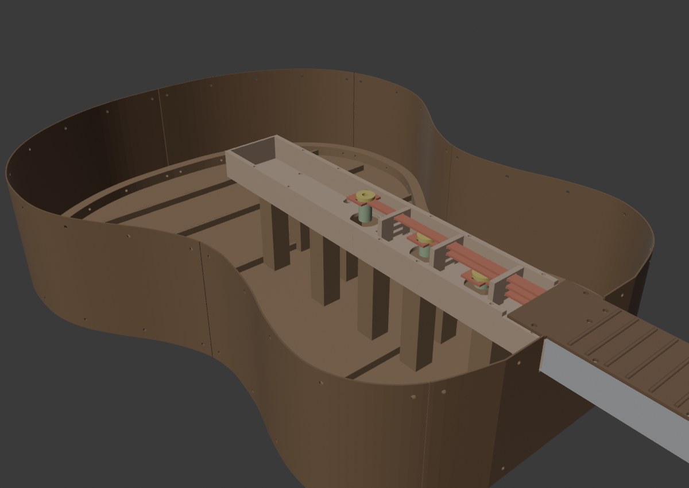
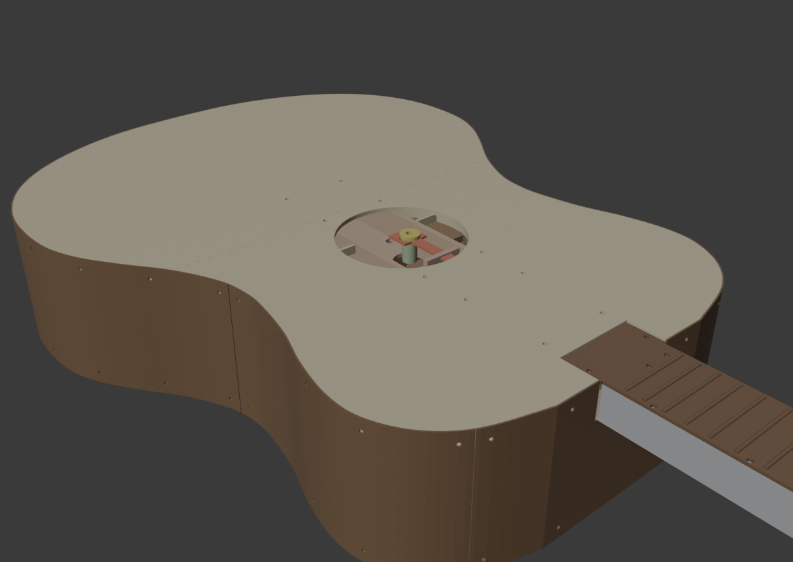

Хребет — узкая дека 52 мм с 4 моторами NEMA17 лесенкой: кривошип каждого мотора пальцем-вниз входит в вилку хвоста своей ленты (кулиса №2). Корпус — восьмёрка в размерах настоящей классики (480×370, глубина 95): хребет стоит внутри на 9 тумбах, моторы прячутся в корпусе, крышка на уровне фретбордов, розетка Ø87 у талии — механику видно.
35/36 (включи
поддержки «только от стола» — стыковой вырез нависает 1.5 мм). Корпус —
столы 37–40 (дно), 41–43 (крышка, печатается лицом
вниз), 44–46 (7 лент обечайки, PETG!). Для столов 39, 40
(юг дна) и 41, 43 (север крышки) включи поддержки «только от стола» —
там стыковые полки-нахлёсты, как у секций грифа.| Деталь | Сколько | Откуда |
|---|---|---|
| Дно хребта Д1 (3 мотора) / Д2 (1 мотор) | 1+1 | 35/36 |
| Кривошип (диск Ø14, D-отверстие, палец вниз) + втулка-подставка своей высоты | 4+4 | 35/36 |
| Гребёнка поддержки лент | 4 | 35/36 |
Лента-сегмент ext 178 мм (все одинаковые) | 8 | 36 |
| Лента-хвост с вилкой (4 длины — по своему мотору) | 4 | 36 |
| Куски дна корпуса (nw/ne/sw/se, с тумбами и бортиком) | 4 | 37–40 |
| Куски крышки (wn/ws/en/es, розетка, окно под язык) | 4 | 41–43 |
| Лента обечайки 95 мм (одна — с проёмом под гриф) | 7 | 44–46 |
| Моторы NEMA17 (17HS8401S), TMC2209 ×4, ESP32, PD-триггер 20 В, конденсатор 470 µF/50 В | — | покупное |
Переверни дно хребта. Вставь каждый NEMA17 валом вверх в круглый колодец (вал с лыской выйдет над дном на ~20 мм) и прикрути 4 винтами М3 сквозь дно в резьбовые дырки фланца (квадрат 31×31). Провода моторов выведи на запад — там свободная зона под электронику.

На каждый вал надень втулку-подставку до упора в дно — у каждого мотора СВОЯ высота втулки (они задают этаж кривошипа, подпиши при печати!). Сверху надень кривошип D-отверстием на лыску вала, пальцем ВНИЗ. Диск ляжет на втулку — проверь, что он крутится на высоте своего этажа, не задевая дно.
Вставь 4 гребёнки штырями в ямки дна (между моторами). Их щели поддерживают все 4 ленты по высоте на длинных пролётах.

Сложи 4 куска дна на столе в восьмёрку (тумбами вверх). Стыки — как у секций грифа: полка одного куска заходит под соседний. Прошей 10 винтами М3×4 снизу (сквозь полку, канал не насквозь) — изнутри корпуса дно гладкое, дырки только под гитарой.

Состыкуй Д1+Д2 между собой (бутерброд 4×М3, как секции грифа) и поставь хребет на 9 тумб дна — дырки в дне хребта совпадут с каналами тумб. Прикрути 9 винтами М3×8 сверху (изнутри хребта, свободный запад и восток). Моторы повиснут внутри корпуса, до дна им ~18 мм.
Собранный гриф (см. manual/grif.html) прикручивается к хребту
так же, как секции между собой: полка юга секции-3 под вырез севера Д1,
4 винта М3×8 снизу.

Ленты собираются цепочкой: голова (уже в секции-1) → ext → ext → хвост с вилкой. Стыки — взаимные защёлки на переходах секций: у нижнего языка штырёк вверх + дырка, у верхнего — дырка + штырёк вниз. Просто наложи и нажми. Высокий штырёк торчит над лентой — в собранной гитаре потолок щели не даст стыку расцепиться.
Порядок — снизу вверх, по одному этажу:

Лента PETG гнётся руками. Начни с сегмента с проёмом — он огибает пятку грифа (пятка ложится на его приступок). Прикладывай сегмент к бортику дна и крути М3×5 в радиальные каналы (нижний ряд дырок). Дальше — по кругу все 7 сегментов встык; концы соседей крепятся рядом на том же бортике. Верхний ряд дырок пока свободен — он для крышки.

Соедини 4 куска крышки «бутербродом»: полки северных и западного кусков заходят под соседей, 14 винтов М3×4 снизу (каналы не насквозь — снаружи крышка чистая). Положи крышку на корпус: бортик крышки встанет внутрь обечайки, окно на севере — вокруг хребта. Язык фретборда секции-3 ляжет в окно на две бобышки. Прикрути:
| Что | Куда |
|---|---|
| PD-триггер 20 В | от Xiaomi 100W → VM всех TMC2209; конденсатор 470 µF/50 В на VM/GND у клемм |
| TMC2209 | ток 700 мА, SpreadCycle (команда mode 1) |
ESP32 (текущая прошивка drive_web.ino — 1 канал) |
STEP=25, DIR=26, EN=27, UART TMC: RX=16/TX=17; USB → пульт
websim/serial_pult.html (Chrome) |
websim/guitar_four_physics.html: качание в секторе, позиция
тележки однозначна по углу мотора).Гитара-тренажёр · дека и корпус ·
файлы: gitara_deka.py, gitara_korpus.py, сцены
Гитара_дека.blend, Гитара_корпус.blend, инструкция —
manual/deka.html